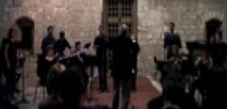
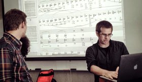

Jan. 3-5, 2017: Guest lecturer & technical consultant/mentor composer at the University of Chicago. [Switch~ Ensemble] Residency.
NEWS & EVENTS:
Dec. 14-16, 2016: the [Switch~ Ensemble] plays San Francisco & Oakland Vernon Salon.
Sep. 25, 2016: Second Study for Alto Saxophone, Electronics, and Video: pulp with Matt Evans and Chris Chandler at Kent State University. [Switch~ Ensemble] Residency.
Sep. 27, 2016: Guest lecture, San Jose State University.
Sep. 23, 2016: Guest composer talk, Vernon Salon, Oakland.
Sep. 23, 2016: Guest composer talk, Vernon Salon, Oakland.
Sep. 17, 2016: NEON Music Festival, guest composer, Asymptotic Flux: First Study in Entropy with the Mivos Quartet and clarinetist Madison Greenstone.
Aug. 21-Sep.9, 2016: Royaumont Académie Voix Nouvelles, World Premiere of soliloquios del viento (2016) for six singers and eight instrumentalists, written for Talea Ensemble & Exaudi. Commissioned by Voix Nouvelles de la Fondation Royaumont, world premiere September 9, 2016. Royaumont Abbey, France. (program notes & info)
July 6-16, 2016: VIPA Festival, executive director | the [Switch~ Ensemble], artistic director & conductor. Premieres of new works by participant composers M.Arrellin, J.Corren, B.Giang, S.Gillies, T.Gilmore, NamHoon "Matthew" Kim, T.Papatrechas, I.Santos, and A.Walton. World premiere of new commissions by James Bean and Timothy McCormack. National premiers of works by faculty composers Rand Steiger and Stefano Gervasoni. Valencia, Spain
June 23-30, 2016: Avaloch Farm Music Institute residency with the [Switch~ Ensemble] and Timothy McCormack, new works by McCormack, Bean, Walton, Santos, Papatrechas, Gillies, Corren, and more.
May 22, 2016: Queens New Music Festival
the [Switch~ Ensemble], artistic director & conductor.
American premieres of Loop's Definition by Santiago Diez-Fischer, Star Me Kitten* by Alexander Schubert, Asche by Lisa Streich, and recent works by C.Chandler, C.Mettens, and A.Vine.
May 14, 2016: Sean Fredenburg will perform Second Study for Alto Saxophone, Electronics, & Video: pulp at Portland State University
Apr. 24 & 29, 2016: Emily Jane Loboda will perform Second Study for Alto Saxophone, Electronics, and Video: pulp at University of North Carolina at Greensboro and at University of Richmond. Greensboro, NC & Richmond, VA
Apr. 11, 2016: Casey Grev will perform Second Study for Alto Saxophone, Electronics, and Video: pulp at Michigan State University. East Lansing, MI.
Jan. 12, 2016: Guest lecturer at the University of Chicago. Chicago, IL.
Mar. 5, 2017: Hot Air Festival, San Francisco.
SF Premiere of Second Study for Alto Saxophone, Electronics, and Video: pulp (2015).
New work for contrabass clarinets, percussionists, live video-processing, and electronics.
Aug. 2, 2017: Time Spans Festival, New York City. New work 'PANIC ARCHITECTURE' for the Talea Ensemble. Commissioned by the Earle Brown Music Foundation.
Jan. 5, 2017: Curator, two-year term. San Francisco Center for New Music.

Mar. 6, 2017: San Francisco Center for New Music, Second Study for Alto Saxophone, Video, and Electronics: pulp (2015), Casey Grev. (click for program notes & info)
May 10, 2016: Guest Lecturer, Portland State University, Composition & Saxophone seminars.
Portland, OR
2018
2017
2016



April 26, 2017: Second Study for Alto Saxophone, Electronics, and Video: pulp with Matt Evans and Chris Chandler at University of Richmond. Richmond, VA.
Ensemble-in-residence performing new works by students and faculty at Cornell University, Bard College, Ithaca College, & Buffalo State University. With support from New Music USA, Eastman's Paul R. Judy Fund, & the Amphion Foundation. Premiering a new commission from composer Matt Sargent.
Artist Residency, Saratoga, Wyoming.
Awarded six months as Artist-In-Residence.
2019